ParaBicychologie
- Accueil >>> Girardot ( Colombie )
La ville de Girardot.
Site : Gare et environ à Girardot.
Lieu : ville de Girardot, département de Cundinarmaca, Colombie.
| 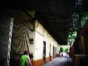 | 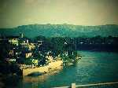 | 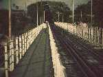 | 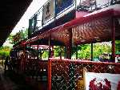 | 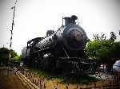 |
| 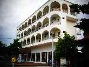 | 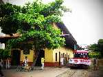 | 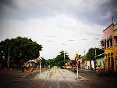 | 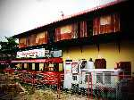 | 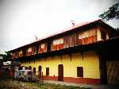 |
| 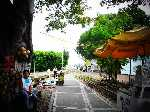 |
Website © Copyright - ef. Bicy Gonzo.